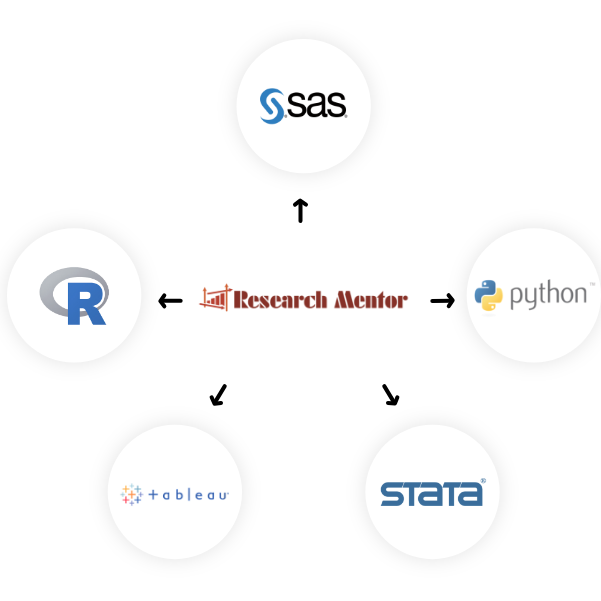

Big DATA Analysis Tool
데이터 분석 전문가 집단 : 리서치 멘토
리서치 멘토는 빅 데이터 분석 시 다양한 통계 소프트웨어를 분석에 활용하며, SAS · R · Python · STATA · Tableau등 빅 데이터 분석 시 클라이언트에서 원하는 분석 Tool을 활용하여 클라이언트의 요구 사항을 빠르고 정확하게 업무를 진행합니다.

Medical Big DATA
리서치 멘토는 국민건강심사평가원, 국민건강보험공단 등 국가 과제로 빅 데이터 분석을 진행한 경험이 풍부하며, 빅 데이터 활용 및 반출 등 업무 프로세스에 대해 완벽히 파악하고 있습니다. 또한, 분석 이후 주간 또는 월간 보고서 작성을 통해 업무의 진행률이나 특이사항을 메모하여 분석에 차질 없이 계약 기간 내 완성된 결과물을 제공해 드립니다.
- 국민건강심사평가원 빅 데이터 분석
- - 심평원 데이터에서 클라이언트의 요구사항 데이터 추출
- - 코드 분류, 데이터 정제, 데이터 가공 등 분석에 용이하게 Table 생성
- - 해당 대상자의 정보로 필요한 결과 도출 분석 소프트웨어 : R
- 국민건강보험공단 데이터 분석실 활용
- - 약 7천만 건 이상의 데이터 활용
- - 클라이언트의 데이터와 건강보험공단 데이터를 Merge하여 요구사항 추출
- - 분석 소프트웨어 : SAS
.PNG)
.PNG)
AI(Artificial Intelligence)
의료 산업에서의 AI기술은 현재 널리 각광받고 있고 미래에는 보다 넓은 분야에 쓰일 것으로 예상됩니다. 리서치 멘토의 전문적인 통계분석팀은 급변하는 의료 빅 데이터 시장에 AI기술을 적용하여 통계분석 및 알고리즘 개발 영역으로 사업을 확장할 계획입니다.
- 의료산업 전반적인 부분에서의 AI 활용
- - ICT 융합기술 및 의료 빅데이터를 활용한 인공지능 기반 의료기기 기술개발이 활발히 진행 중
- - 영상 · 음성 · 데이터 인식 기능 등 의료기기에 접목하면 판독 정확성을 높이고, 질병 예측 및 예방 등 새로운 가치 창출을 기여 할 수 있음
- - AI 기반 의료기기는 기존 의료기기보다 성능 · 효율 그리고 질적 수준을 크게 향상 시킴
- 영상의학 분야에서의 인공지능
- - 영상에 의한 질병 정도를 점수화 또는 분류
- - 빠른 판독 포인트, 임상 정보 및 유전 정보 종합
- - 신속 · 정확하며 개인화된 적합한 진료 가능
- - 인공지능은 의사를 대체하는 것이 아닌 보조해주는 역할